Ask a room of trigger engineers whether high-level synthesis can be used for a production trigger and you hear the same three objections. You will not manage to build a system that complex in HLS. The area and latency will be much larger than in RTL. HLS is fine for prototypes, not for production. Between 2023 and 2025 we rewrote part of the firmware of the ATLAS Liquid Argon calorimeter trigger in HLS, and it is now the version used for physics data taking. This post is about how that went.
The detector and the signal
The Liquid Argon (LAr) calorimeter measures the energy of electrons, photons and jets. It is a sampling calorimeter: layers of lead, copper or tungsten absorb the particles and start a shower, and the liquid argon between them is ionised by it. A high voltage across each argon gap turns the ionisation into a current. The signal is a triangular pulse, which the front-end electronics amplify, shape and digitise. There are about 180,000 cells, arranged in up to four layers in depth, covering the detector out to |η| < 4.9.
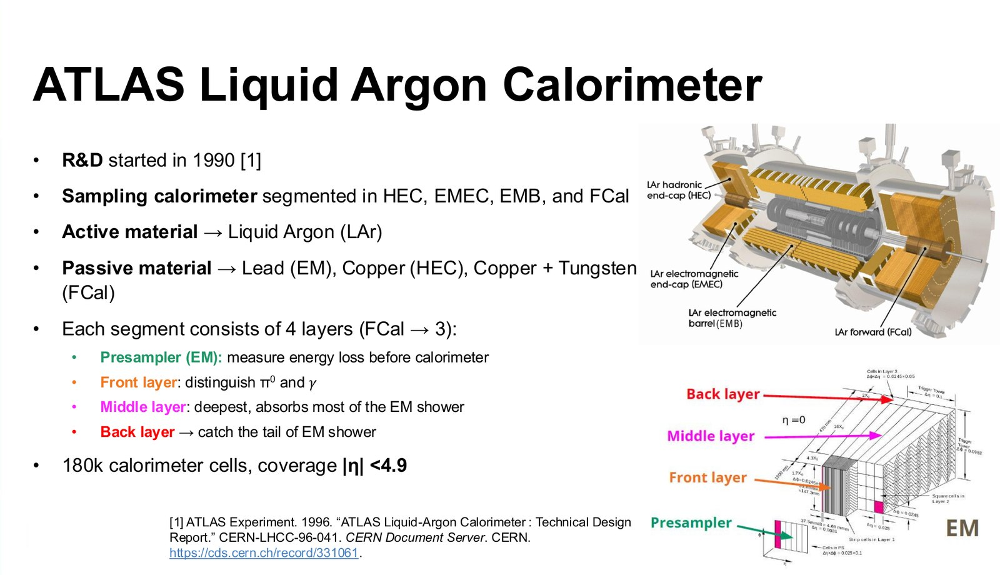
For the trigger, the cells used to be summed into 5,400 trigger towers of 0.1 × 0.1 in η and φ, with all layers added together. The Phase-I upgrade, completed for Run 3, introduced 34,000 super cells, ten times more granular, with the layers kept separate so that the shape of a shower is visible to the first-level trigger. They are digitised on the detector and sent out over optical links.
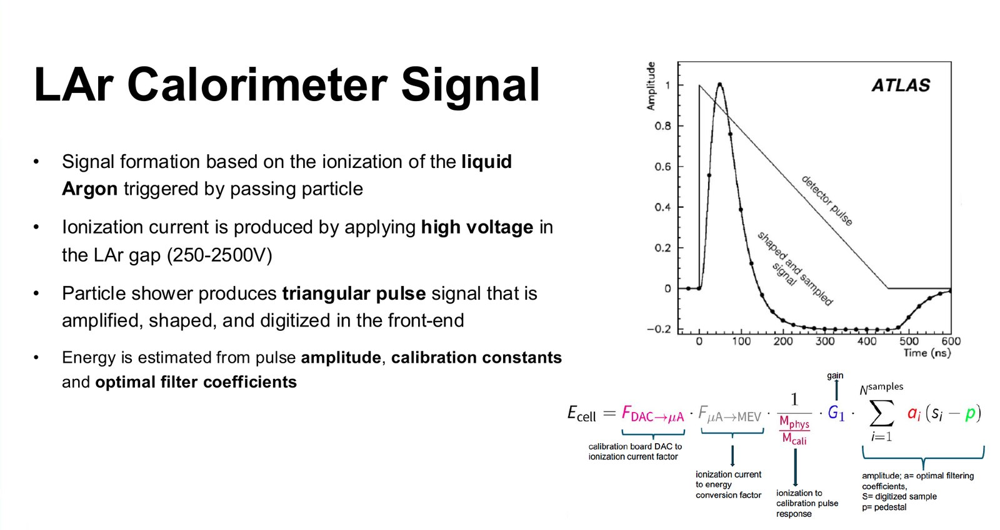
The board and the firmware
Off the detector, 116 LATOME mezzanine cards, each built around the largest Intel Arria 10 FPGA, receive the super cell data. Each card deserialises, decodes and aligns its inputs, reconstructs the transverse energy of every super cell and identifies its bunch crossing, then compresses, encodes and serialises the results towards the three feature extractors of the calorimeter trigger, eFEX, jFEX and gFEX. It also buffers readout data for the events that the trigger accepts.
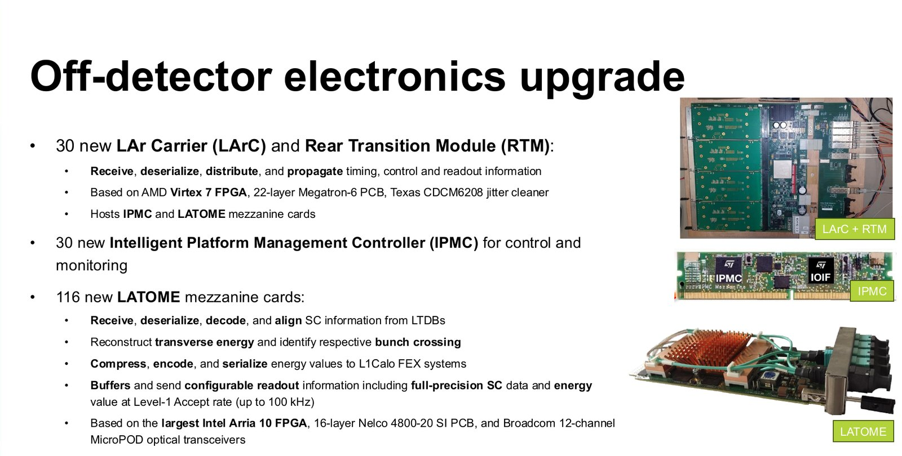
The firmware is hard for four reasons at once. It is large and congested: a lot of data enters a single FPGA. It has many clock domains: inputs at 5.12 Gb/s, outputs at 9.6 and 11.2 Gb/s. All inputs have to be aligned to one clock with a deterministic phase before any processing. And it has a latency allocation of 400 ns, set by the size of the memory buffers on the detector. The first version went into the experiment in 2021, was improved over the following years and became the default trigger for physics in 2024.
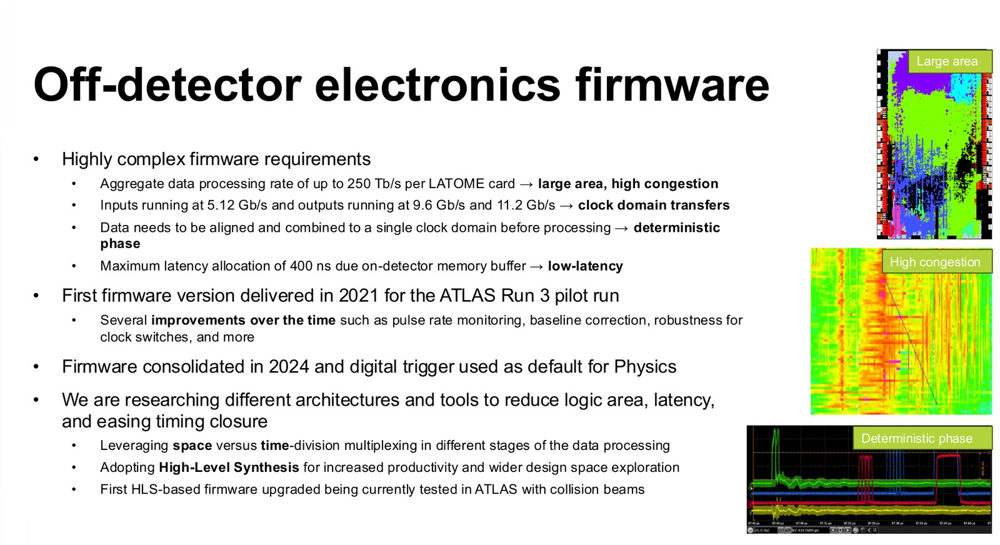
Why HLS, and where
In RTL the engineer decides where every pipeline register goes. In a deep datapath that is both the source of control and a source of trouble: stages end up unbalanced, and a change of requirement means moving registers by hand. In HLS the engineer describes the computation and a latency target, and the tool schedules the operations into stages. That makes it much easier to keep stages balanced, and to explore several pipelinings of the same code.
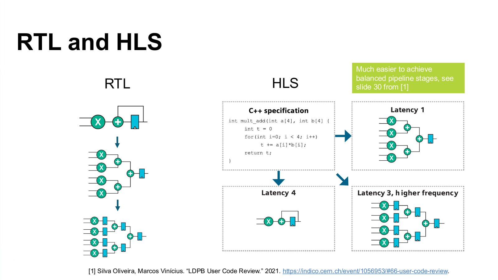
We did not rewrite everything. We picked two blocks where RTL was hurting most: the remapping of super cell data before it is summed, and the encoders at the outputs.
Remapping with a sparse switch matrix
Super cell data arrive in the order of the fibres and the channels of the front-end boards. The summing stages need them in the order of the detector geometry, and every output link has its own format. In the RTL version this reordering was done in three stages, input reordering, a multiplexing stage and a resynchronisation, with a change of clock from 320 MHz to 240 MHz on the way. Each stage was hand-written and tied to the others.
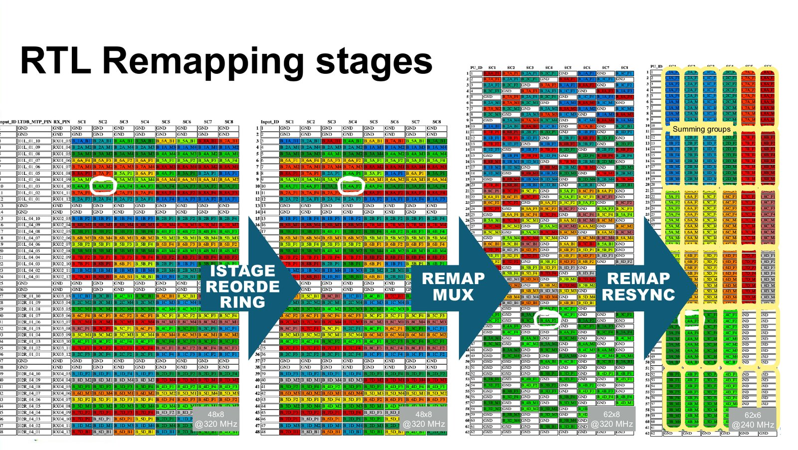
Conceptually, all three stages together are one thing: a switch matrix that connects every input position to every output position it is needed at. A full switch matrix is expensive, because it connects everything to everything. But in our case most of the connections are never used: each output needs a small number of specific inputs. Written as a sparse switch matrix in C++, with the connection table as a constant, the whole remapping becomes a few lines of code and the synthesis tool removes every connection that is not used.
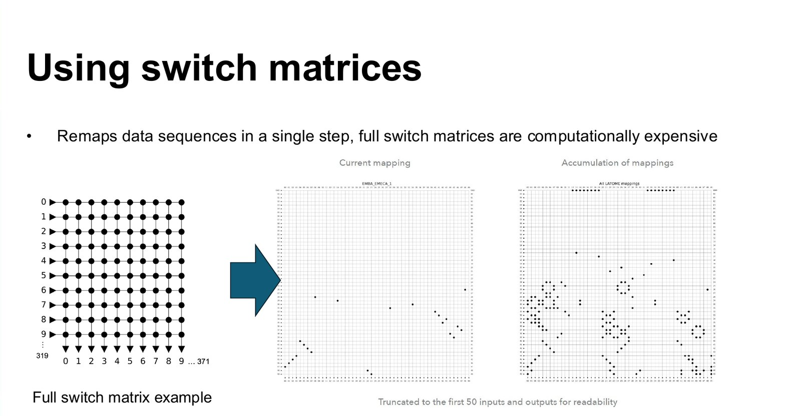
We used Siemens Catapult. Its loop is fast: simulate the C++, change the function, get estimates of latency, area and maximum frequency in minutes, then generate RTL and characterise it in Intel Quartus. The sparse switch matrix came out at about 6% of the logic of the FPGA and about 310 MHz. Because the connection table is data, a change of mapping is a change of a table, not of the design.
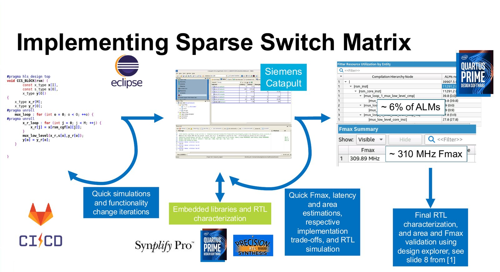
Output encoders, and one parameter
The other block is the encoder that packs energies into the compact format of each output link. It is the block that is repeated most: the eFEX outputs alone need 320 of them. Implementing it as reconfigurable look-up memories would have taken all the memory of the FPGA. Since the encoding changes rarely, we let it be fixed logic and let the synthesis tool minimise it, the same way a designer would with a Karnaugh map, only for thousands of terms. The first version took prohibitively long to synthesise. Several iterations with Siemens support fixed that.
With the code working, we did something that would have been a project of its own in RTL: we changed one parameter, the unroll factor, and let the tool share hardware between encoders. Fully parallel, 320 encoders take 1 cycle, 3.57 ns, and about 25,600 ALMs, 6% of the device. Sharing each encoder between five inputs takes 6 cycles, 21.4 ns, and about 8,700 ALMs, 2%. That is a 66% reduction in logic for about 18 ns of extra latency, with no change to the code, late in the project.
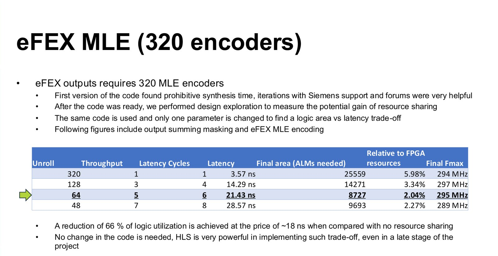
Testing
A test bench that reads stimulus files from disk spends most of its time reading files. We wrote the test benches to generate every input and compute every expected output in memory, for 100,000 bunch crossings. Catapult can run the same test bench against the C++ and against the generated RTL. For a single encoder, the C++ simulation took under a second and the RTL simulation 14 seconds. For all 320, 39 seconds against 1,814, almost fifty times faster. That is what makes it practical to test every change.
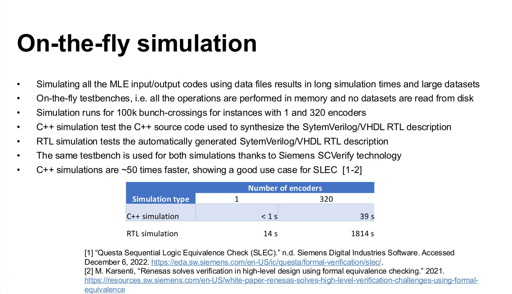
After simulation came the usual chain: tests with recorded detector data, firmware in a test partition, and finally firmware in ATLAS with collisions.
In ATLAS
The measure that matters for a trigger is its efficiency: for a given energy threshold, the fraction of real objects above it that the trigger keeps. The plots below compare the RTL version 5 and the HLS version 6 of the firmware on 2025 collision data, for two jet triggers. The turn-on curves lie on top of each other.
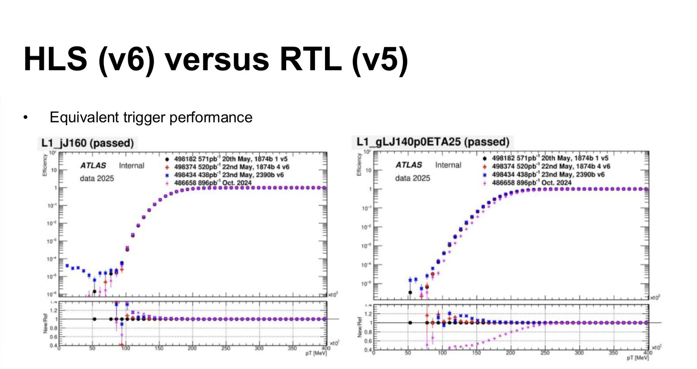
The objections, again
The system was built, it is in production, and it is used for physics. Area and latency are comparable to the RTL. And design cycles are faster in both synthesis and simulation, the code is easier to reuse, and it depends less on one particular FPGA.
That does not make HLS the answer to everything. The blocks we chose are regular, wide and data-driven, which is where HLS is strongest, and the rest of the firmware stayed in RTL. But the claim that HLS cannot be used for a low-latency trigger is now harder to make. I reached the same conclusion on a smaller scale in my PhD, with a sorting network written both ways. If you want to start, Starting with HLS walks through the basics.